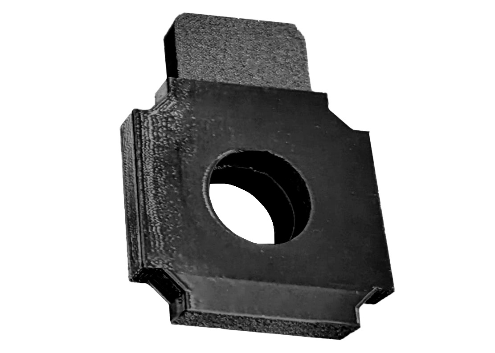
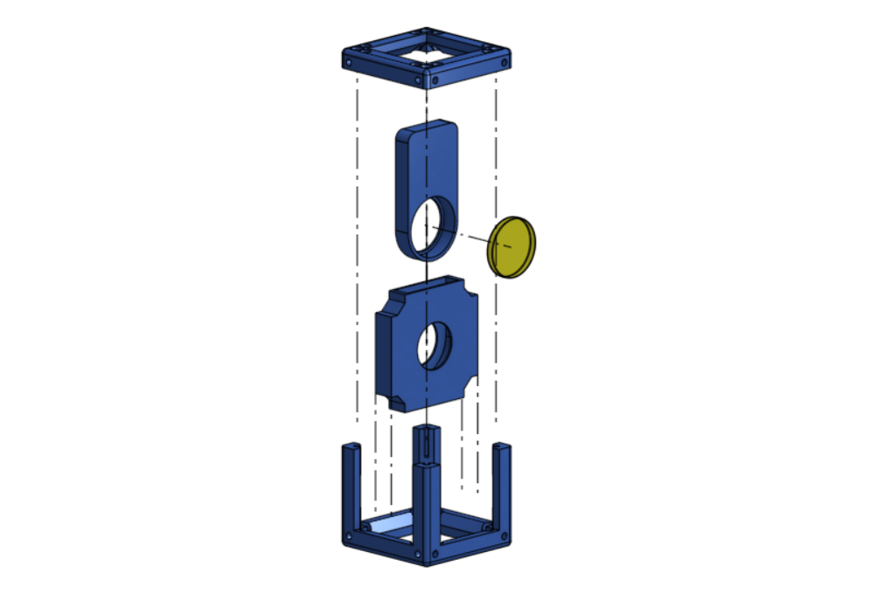
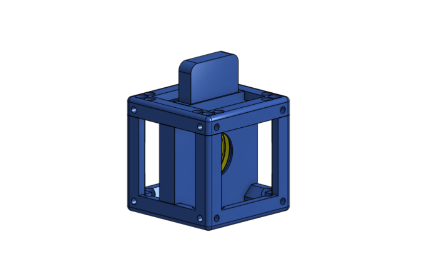

Filter Holder
Cube insert

To assemble this piece is simple.
Step 1:
Place the Filter lens that you want to use, into the Filter Slide
Step 2:
Place that into the Filter slide holder


Step 3: Put it in a cube!
Take one of your UC2 cubes and place your assembled piece in it. You can purchase the cube or 3D print it, either option works fine.
You can switch the filter lens by simply taking out the Filter Slide of the cube